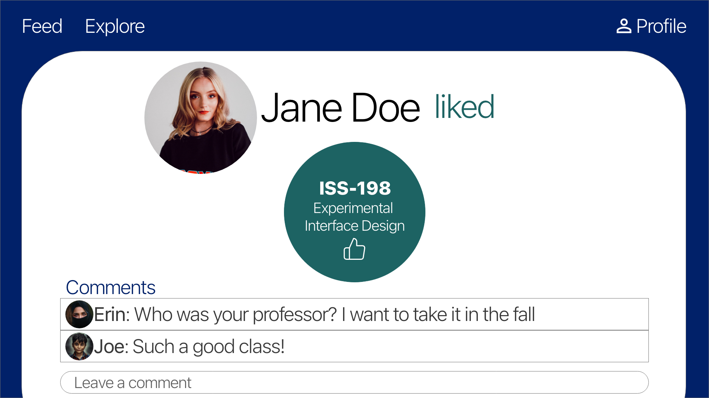

Final Project Plan
Idea
For my final project, I plan to make a website that adds a social aspect to Duke’s registration process. I plan to call this website BlueBook– which touches on Duke’s mascot, the Blue Devils, and Duke’s registration system, bookbagging. On BlueBook, Duke students can add their friends, react to classes, see the classes their friends have reacted to, and explore new classes based on subjects, course codes, or popular classes. Ultimately, BlueBook acts like a social network for Duke students, centered around course offerings. BlueBook differs from RateMyProfessor and other class ranking websites for a few reasons. First off, BlueBook is specific to Duke. The website is structured by the course credits, graduation requirements, and course offerings at Duke. Additionally, to react to and rate classes, users must have a valid Duke email, which minimizes the amount of spam on BlueBook. Finally, rather than viewing a general consensus of certain classes, users on BlueBook can view what classes their friends, peers, and other people in their major have enjoyed, making the user’s experience personalized to their own Duke network and interests. BlueBook aims to help guide students through the registration process, so that, over their four years here, they can explore more of the courses and opportunities that Duke has to offer.
Scope
To implement BlueBook, I will create the following pages and components, using Bootstrap and Vue:
Home Page
The home page will be a static page with the BlueBook name and logo. There will be 3 buttons on the home
page. The “Login” button will take users to the Login page (described below). The “Sign Up” button will
take users to the Sign Up page (described below). The “Continue as Guest” will take users to the explore
page. Note, when a user is viewing the site as a guest, they will not have access to the Profile or Feed
pages. Additionally, they will not be able to add friends, subjects, or react to classes unless they are
logged into a valid student account. For the most part, the home page will be static, besides these 3
buttons which will take users to the respective pages.
Login Page
On the login page, users will enter their email associated with their account and their password. If the
user enters a valid username in password, which we will authenticate with Firebase Authentication, when
they hit the “Go” button, they will be taken to the Feed page. Note, the feed page will not be
accessible by any users who have not logged in to valid accounts. If the user doesn’t have an account,
they can click the “No Account? Sign Up” button instead, which will take them to the Sign Up page,
described below.
Sign Up Page
On the sign up page, users will enter their name, their Duke email, and their password. We will
authenticate the Duke email address using authentication steps in Firestore (i.e. sending an email to
their Duke email address to verify the email). Then, users will select their major(s), minor(s) and
certificate(s) from a Select-Subject component, which will be implemented as a custom Vue component.
This component will contain 3 drop down menus with subject names from the Subject collection of our
database (described below) that users can select for their major, minor, and certificate. Their
selections will be displayed in their profile under “Subjects,” as explained below. After filling out
this information and pressing “Go”, users will be taken to the Feed page.
Feed Page
The feed page will display a collection of “Reaction” components made by the user’s “friends”, which
will be sorted in descending order by date. Everytime a user “likes,” “dislikes,” or adds a class to
their “wishlist,” a reaction document will be added to our database and, as a result, the corresponding
“Reaction” component will be added to the feed of all people who follow the user. So, each user will
have a personalized feed of “Reaction” components made when their friends like, dislike, or add a class
to their wishlist. “Reaction” components will include the following information:
- The user’s name (who made the reaction)
- The reaction type (i.e. “likes”, “dislikes”, “wants to take”)
- A Class-Reaction component (which contains the class name and has the appropriate background color based on the reaction type)
- A comment input (where the user can leave a comment for the reaction)
User Page
The user page will contain the profile picture of the user and the name of the user. If the user is looking at their own User page, then the user page will not display an Add Friend button. If the user is looking at someone else’s User page, the user page will display an Add Friend button, if they aren’t currently friends, or a Remove Friend button, if they are currently friends. Under this, there will be 3 sections of the User Page, each implemented via a component.
-
Classes Section
The classes section will contain 3 components: Liked-Classes, Wishlist, and Disliked-Classes. Each of these components will contain a Class-Reaction component for each class that the user has liked, added to their wishlist, and disliked (respectively). When clicking on any of these Class-Reaction components, the user will be directed to the appropriate “Reaction” page, where they can view all the comments for that reaction. -
Subjects Section
The subjects section will contain a collection of Subject-Components. The size and the color of the subject components will depend on the following. If the subject is the user’s major, then the subject-component will be the largest. If the subject is the user’s minor or certificate, then the subject-component will be medium sized. Otherwise, if the user has added the subject to their profile via the Explore page, the subject-component will be the smallest. When clicking on any subject-component, the user will be redirected to the Subject page, described below. -
Friends Section
The subjects section will contain a collection of Friend-Components for each person that the user adds as a friend. Each friend-component will contain the name and profile picture of the “friend.” When clicking on any friend-component, the user will be redirected to the User page for the specified friend.
Explore Page
The explore page will contain a search bar, which the user can type into, as well as 4 sections, each implemented via components. Note, the search bar will search within the selected section. So, if “People” is selected, typing “John” in the search bar will search for users named John.
-
Classes Section
The classes section will contain a collection of Class components, which contain the class number and class name. Clicking on any class component will take the user to the corresponding class page, described below. If the user hasn’t specified any search terms, the classes displayed will be recommendations made based on popular classes (search algorithm TBD, may include major / subject interests if time permits it). Otherwise, only courses that match with the search term will be displayed. -
Course Code Section
The course codes section will contain a collection of Course-Code components. Course-Code components contain a name, which represents the name of the course code, and a classes section. The classes section will contain a collection of Class components that correspond with the course code. Only a few of these classes will be displayed, followed by a “See More” button. By pressing the “See More” button, users will be directed to the course code page for the appropriate course-code, which is described below. If the user clicks on any of the classes displayed in the classes section, they will be directed to the corresponding class page. If the user hasn’t specified any search terms, all course-code components will be displayed. Otherwise, only course-codes that match with the search term will be displayed. -
Subjects Section
The subject section will contain a collection of Subject components. Subject components contain a name. The size of the Subject components will be determined by popularity of Subject within the BlueBook (i.e. how many students have added the subject to their profile). By clicking on any subject component, the user will be directed to the corresponding subject page. If the user hasn’t specified any search terms, all subject components will be displayed, sorted by popularity. Otherwise, only subjects that match with the search term will be displayed. -
Friends Section
The people will contain a collection of Friend components. Friend components contain a name and the profile picture of the user. By clicking on any friend component, the user will be directed to their corresponding User page. If the user hasn’t specified any search terms, all friend components will be displayed, sorted by relevance to the user (according to their major, minor, certificate, etc.). Otherwise, only users that match the search term will be displayed.
Class Page
The class page will be displayed whenever a user clicks on a class component. Whether the user is logged in or not, on the class page, users can view the name of the class, the class number, a description of the class, and the course codes associated with the class (including cross-listings, modes of inquiry, and areas of knowledge). Users can also view the average “difficulty” level (out of 5 stars) and average “interesting” level (out of 5 stars) that students within BlueBook have rated the class. Finally, users will be able to view a comment section that includes any comments about the class left by student users.
If a user is logged into a valid student account, on the course page, they will be able to leave a difficulty rating (out of 5 stars) and interesting rating (out of 5 stars) for the given course. Additionally, they will be able to click the “like” button, “dislike” button, and “wishlist” button for the class, which will add the class to their profile in the respective category, as well as create a reaction post that will display in their friend’s feeds. Finally, students can leave a comment for the class. Students can either leave anonymous comments or leave a comment with their name.
Reaction Page
A reaction page will open when a user clicks on any reaction component, either from the feed page or a user profile page. A reaction page is an expanded version of the reaction component that contains
- The user’s name
- The reaction type (i.e. “likes”, “dislikes”, “wants to take”)
- A Class-Reaction Component (which contains the class name and, when clicked, takes the user to the corresponding class page)
- A comment section (containing all comments for the current reaction)
- A comment input (where the user can leave a comment for the reaction if they are logged in)
Course Code Page
The course code page will contain the name of the specified course-code (i.e. “Natural Science”) along with a class section that contains class components for all classes that match that course-code. When the user clicks on any class component, they will be directed to the corresponding class page.
Subject Page
The subject page will contain the name of the specified subject (i.e. “Physical Education”) along with a class section that contains class components for all classes that are listed under that subject. If the user is logged into a valid account, then an “Add Subject” or “Remove Subject” button will appear under the class name, depending on if the user has added the subject to their profile. When the user clicks on any class component within the subject page, they will be directed to the corresponding class page.
Data Sources
In order to populate BlueBook with Duke classes, I will use the Duke Curriculum API, which provides JSON streams of data which show various course details. I’ve already requested and received an API key, so I’ve been playing around with the developer console in order to figure out the requests I need to make to get the information I need. In order to access the JSON data I need, I will make GET requests to the following endpoints:
-
/curriculum/courses/subject/{subject}
For each subject in the subjects variable in subjects.js (which I’ve created based on the subjects listed in Duke’s registration website), I will make the above GET request with each subject name in the list. The response JSON data will be formatted as seen in subjectResponse.json
For the JSON response for each subject, we will retrieve the following information:- subjectCode = data.ssr_get_courses_resp.course_search_result.subjects.subject.subject
- subjectName = data.ssr_get_courses_resp.course_search_result.subjects.subject.subject_lov_descr
- classes = data.ssr_get_courses_resp.course_search_result.subjects.subject.course_summaries.course_summary
- courseID = classes[i].crse_id
- courseOfferNumber = classes[i].crse_offer_nbr
-
/curriculum/courses/crse_id/{courseID}/crse_offer_nbr/{courseOfferNumber}
For each class, we will make the above request, which will return the JSON data formatted as seen in classResponse.json.
From the JSON, we will retrieve the following information for each class, which we will store in our database:- subject = data.subject
- catalog_nbr = data.catalog_nbr
- description = data.descrlong
- title = data.course_title_long
- type = data.acad_career_lov_descr
-
components = data.course_components
- For each course, we will store the Array course_codes calculated from: course_codes[i] = components[i].ssr_component_lov_descr
Once retrieving the JSON data listed above, we will populate our database (Firestore) with the subject and class data, as described below.
Data Structure
For my project, I will use Google’s Firestore to store data to support the app. Firestore stores collections of documents. We will create the following collections:
-
Users
The users collection will contain a document for each user on the app. User documents will have the following fields:- uid: each user will be given a unique user ID by Firestore
- displayName: name specified by user when creating an account
- email: email address of current user
- picture: link to profile picture uploaded by user (and stored in Firebase Storage)
- majors: an array of of subject codes for the majors the user specifies when creating an account
- minors: an array of subject codes for minors the user specifies when creating an account
- certificates: an array of subject codes for the certificates the user specifies when creating an account
- subjects: an array of subject codes for the subjects the user adds to their profile
-
Subjects
The subjects collection will contain a document for each subject offered at Duke. Subject documents will have the following fields:- subject: subject retrieved from Duke API
- subjectName: name retrieved as stated above from Duke API
-
Courses
The courses collection will contain a document for each course offered at Duke. Course documents will have the following fields:- courseID: ID retrieved as stated above from Duke API
- catalogNumber: number retrieved as stated above from Duke API
- description: description retrieved from Duke API
- title: title retrieved from Duke API
- type: type retrieved from Duke API (undergrad, grad, etc.)
- courseCodes: course code names retrieved from Duke API
- interestingSum: current sum of interesting rankings given to course
- interestingCount: current count of interesting rankings given to course
- difficultySum: current sum of difficultyCount rankings given to course
- difficultyCount: current count of difficultyCount rankings given to course
-
Reactions
The reactions collection will contain a document for each reaction to a course made by a user. Reaction documents will have the following fields:- reactionID: unique ID of reaction (generated by Firestore)
- type: type of reaction (like, dislike, wishlist)
- userId: unique ID of user who made the reaction
- courseID: unique ID of course that received reaction
- date: timestamp of reaction
-
Comments
The comments collection will contain a document for each comment made on a reaction. Comment documents will have the following fields:- reactionID: unique ID of reaction comment belongs to
- userId: unique ID of user who left the comment
- text: text of comment
- date: timestamp of comment
-
Follows
The follows collection will contain a document for each “friend” relationship on BlueBook. Follows documents will have the following fields:- followerId: user ID of user following the followingId
- followingId: user ID of user followed by the followerId
Wireframe
Below is a mockup of each of the views of BlueBook:
Home Page
Login Page
Sign Up Page
Feed Page
User Page
-
User Class Section
-
User Subjects Section
-
User Friends Section
Explore Page
-
Explore Classes Section

-
Explore Course Code Section
-
Explore Subjects Section
-
Explore Friends Section
Class Page

Reaction Page
Course Code Page
Subject Page
Schedule
Week 1
-
Set up Firestore database
- Load database with course information from Duke API
- Load database with synthetic data (documents for each collection)
-
Set up Home, Log In & Sign Up Screens
- Test logging in and storing information in Firestore for users
- Create Navigation Bar
Week 2
-
Create components with small synthetic dataset (loaded into Firestore)
- Class component
- Friend component
- Reaction component
-
Set up pages, but don’t need to implement reactivity / connecting to database yet
- Set up class page: Display information for each class from database
- Set up course code page: Display courses for each course code
- Set up subject page: Display courses for each subject
- Set up reaction page: Display reaction and comments
- Set up User page: Display name, picture, classes, subjects, and friends
- Set up Feed page: Display reaction components for friends
-
Test all above features on small synthetic dataset (inputted by me)
- Ensure that all components and pages work properly with the data before adding intractability
Week 3
-
Set up explore page with search that filters the following sections (don’t implement sorting /
recommendation logic yet)
- Class section
- Course code section
- Subject section
- Friend section
-
Make pages reactive (connect to database)
- Class page: Implement reacting to classes, rating classes, and commenting on class
- Course code page: Connect course components to their corresponding class page
- Subject page: Connect course components to their corresponding class page
- Reaction page: Implement commenting on reactions
- User page: Implement following users, clicking on reaction components, clicking on subjects, and clicking on users
- Feed page: Implement clicking on reaction components and commenting on reactions
-
Test all above features on live data input and ensure everything works with the newly inputted data
- Add new users, new reactions, comments, and follows documents and ensure that all implemented components work as planned
Week 4
-
Authentication
- Ensure that guests only see guest pages (and cannot interact with any of the components)
- Ensure logged in users can interact with all components as described
- Ensure admin can see admin views
-
Focus on styling of website
- Make UI aesthetic
- Test accessibility and usability
- Implement recommendation algorithm for explore page (if time permits)
-
Fill database with synthetic data to mirror a fully functioning website with many users
- Ensure that all components work as planned